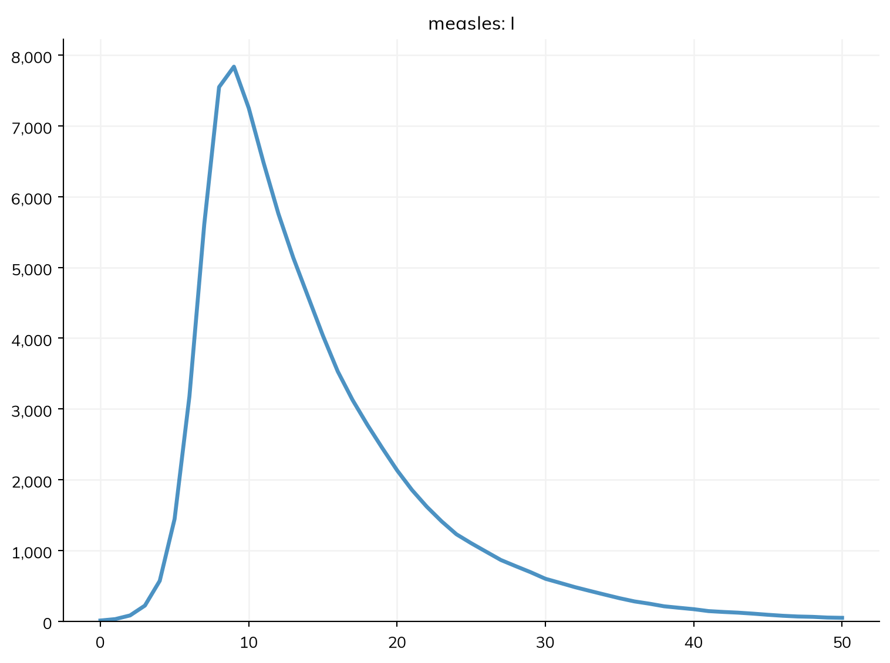
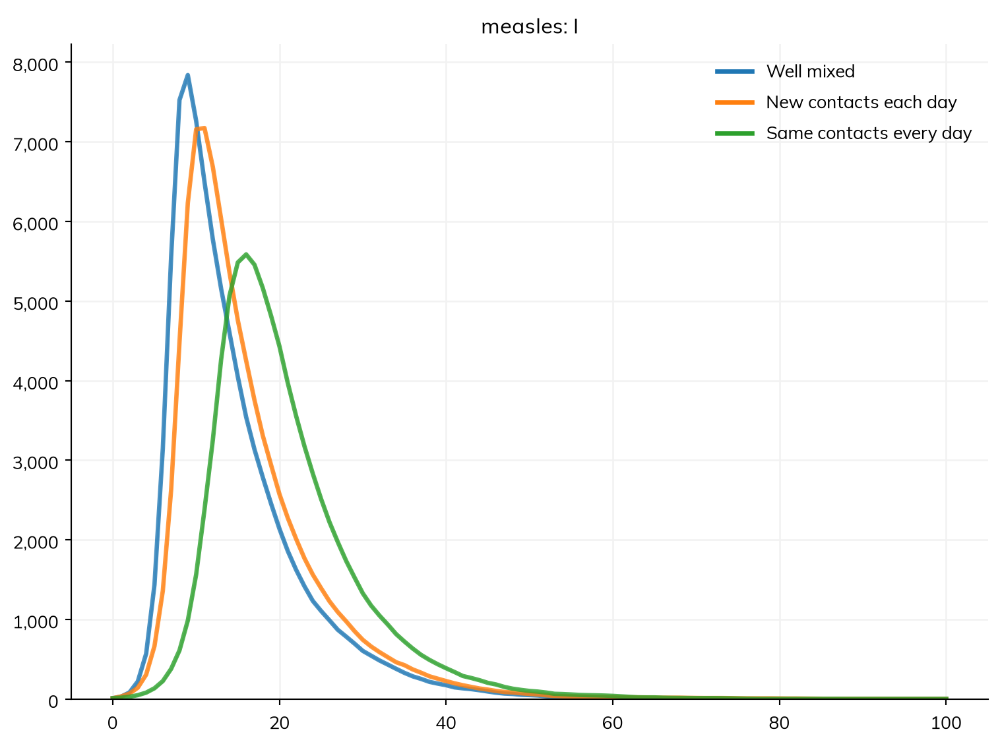
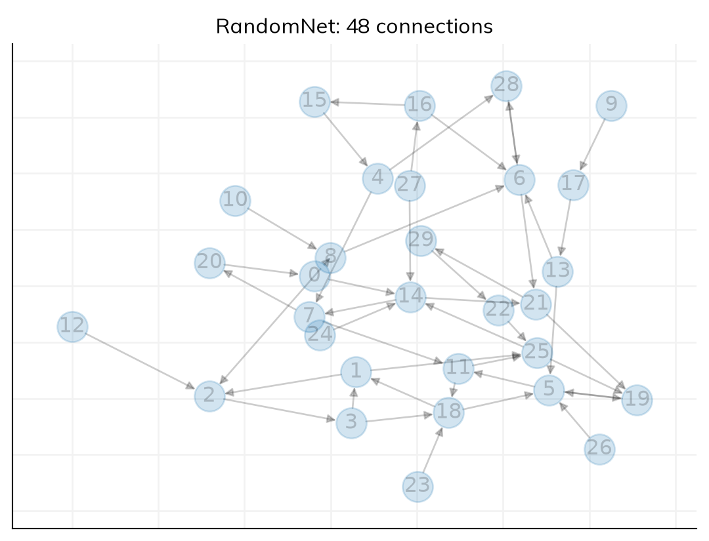
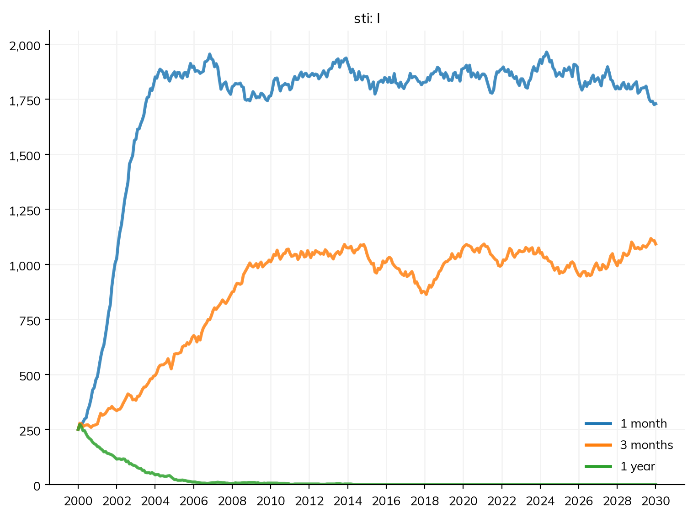
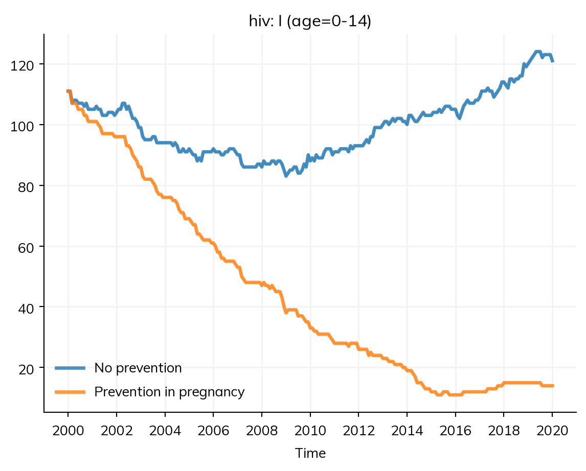
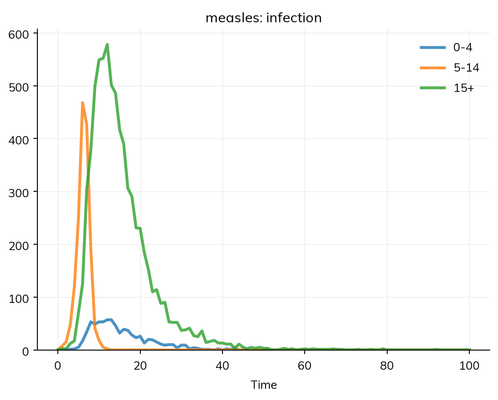

Many infectious diseases transmit when people come into contact with one another, and who infects whom depends on who meets whom. In the core tutorials, people mixed at random: each contact was with someone new, drawn from the whole population (or from an age group). That is a good description of a disease like measles, which spreads through many brief contacts. For other diseases it is not: a sexually transmitted infection spreads between partners, who stay together for months or years, and HIV passes from a mother to her child. What matters then is the pattern of contacts itself, who is linked with whom and for how long, and that is what a network describes.
Starsim contains two different approaches to disease transmission between people:
Contact networks: disease transmits on individual person-to-person relationships. These are networks in the sense that each agent (person) can be viewed as a node and each contact is an edge. Networks are undirected in the sense that an edge will allow transmission in both directions, however you can make transmission stronger one way than the other. Each network manages a list of edges that can change on each simulation step.
Mixing pools: well-mixed transmission from one group of agents to another, as with a contact matrix. Instead of simulating individual edges, a mixing pool works out the total infectiousness of the source group, and exposes each person in the destination group to it.
Contact networks and mixing pools can be used together in a single simulation. This tutorial shows when a network changes the course of an epidemic, how to look inside one, and how to use the three kinds of network Starsim provides: random networks, sexual networks, and the network between mothers and children. It ends with mixing pools. A network links individual people, so a model with one runs as agents.
Starting point
The measles model from the core tutorials, run as agents (see A1):
import numpy as npimport starsim as ssS, I, R = ss.states('S I R')infection = S >> I @1.9*I # β = 1.9 per dayrecovery = I >> R @ ss.days(8) # Infectious for 8 days on averagemeasles = ss.Disease(infection, recovery, init_prev=0.001)sim = ss.Sim(measles, n_agents=10_000, stop=ss.days(50))sim.run()sim.plot('measles.I')
Sim: measles, as 10,000 agents, days 0 to 50
Note: consider a shorter step (e.g. dt=ss.days(0.25)): each step is 1 day, and infection transmits at up to 1.9 per day (with everyone infectious), 85% in a step (and I is fast too). Taking whole steps, agents may differ from the ODE by an amount of that order; sim.check_dt() shows how much it matters
Done in 0.049 s; measles: 9,990 infections; at most 7,838 infectious, on day 9

With no network, mixing is homogeneous: β = 1.9 per day is the rate at which one infectious person infects others in a fully susceptible population, and R0 = 1.9 × 8 ≈ 15.
Contacts, and the chance of infection per contact
A rate like β can be split into two parts: the number of contacts each person has per day, and the chance that a contact between an infectious and a susceptible person passes the infection on. With 3 contacts a day, a chance of 0.63 per contact per day gives the same β of 3 × 0.63 = 1.9, and the same R0. Once there are contacts, β in the transition is the chance per contact: a β fitted with homogeneous mixing can’t be reused with a network without checking what it means.
There are several ways to arrange those 3 contacts a day, and each says something different about how people meet:
ss.MixingPool(n_contacts=3): everyone mixes at random, with 3 contacts a day. This is the same model as homogeneous mixing, with β split into contacts and a chance per contact.
ss.RandomNet(n_contacts=3): each person has 3 contacts, with new people each day.
ss.RandomNet(n_contacts=3, dynamic=False): each person has the same 3 contacts every day, for the whole run.
infection = S >> I @0.63*I # A chance of infection of 0.63 per contact per daymeasles = ss.Disease(infection, recovery, init_prev=0.001)pars =dict(n_agents=10_000, stop=ss.days(100))sims = {'Well mixed': ss.Sim(measles, networks=ss.MixingPool(n_contacts=3), **pars),'New contacts each day': ss.Sim(measles, networks=ss.RandomNet(n_contacts=3), **pars),'Same contacts every day': ss.Sim(measles, networks=ss.RandomNet(n_contacts=3, dynamic=False), **pars),}msim = ss.parallel(sims)msim.plot('measles.I')
MultiSim: 3 runs of 3 scenarios (Well mixed, New contacts each day, Same contacts every day)
Done in 0.64 s

When people meet someone new each day, the epidemic is nearly the same as with random mixing. When they meet the same people every day, it is slower and its peak is lower, since contacts are wasted: an infectious person keeps meeting the person who infected them, and the contacts they have already infected. The infection has to spread outward through the network, one link at a time.
Even so, almost everyone is infected in the end, because measles is so infectious that it passes along nearly every link. For measles in a town, then, the pattern of contacts changes the timing more than the size of the outbreak, and the core tutorials’ random mixing (or mixing by age, with a contact matrix) is a reasonable choice. A network matters most when each person has few contacts, the contacts last, and the chance of infection over a contact is well below one: the situation of sexually transmitted infections.
Looking inside a network
A network stores two very important things: the list of contacts (its edges) and the parameters that determine how they form and dissolve. Like all components of Starsim, it needs to be initialized within a sim before the contacts get made. Here is the network with the same contacts every day, for 30 people, so that it can be plotted:
small = ss.Sim(measles, networks=ss.RandomNet(n_contacts=3, dynamic=False), n_agents=30, stop=ss.days(10), verbose=0)small.init()net = small.networks.randomnetnet.plot()

All networks are stored in sim.networks, and individual networks can be found at their class name after conversion to lower case, here randomnet. Each edge has the UIDs of the two people (p1 and p2), a per-edge transmission multiplier (beta), and a duration (dur). Networks provide some basic functionality, for example to find contacts, and the edge list can be converted to a pandas dataframe (to_df()) or a NetworkX graph (to_graph()) for further analysis:
print('Contacts of agent 0:', net.find_contacts([0]))df = net.to_df()df.loc[(df.p1 ==0) | (df.p2 ==0)] # The edges involving agent 0
Contacts of agent 0: [ 8 14 20]
p1
p2
beta
dur
0
0
14
1.0
0.0
1
0
8
1.0
0.0
35
20
0
1.0
0.0
Sexual networks
Measles is a poor example of a sexually transmitted infection, so this section uses a simplified curable bacterial infection, such as gonorrhea: an SIS model, in which people become susceptible again when they recover (here after 6 months on average, untreated). ss.SexualNet() is a network of partnerships between men and women. Each partnership lasts for a time (dur=) and has a number of sex acts per year (by default, 80 on average), and the chance of infection is given per act with ss.peract(), separately from men to women (m2f) and from women to men (f2m): for many sexually transmitted infections, transmission is more likely from men to women than the other way. The time unit of this model is a month, so it runs for 30 years in monthly steps.
A key question for a sexually transmitted infection is how often people change partners. Here are three networks that differ only in how long partnerships last:
S, I = ss.states('S I')infection = S >> I @ ss.peract(m2f=0.1, f2m=0.05)*I # Chance of infection per actrecovery = I >> S @ ss.months(6) # Infected for 6 months on averagesti = ss.Disease(infection, recovery, init_prev=0.05)pars =dict(n_agents=5000, start=2000, stop=2030, dt=ss.months(1))sims = {}for label, dur in {'1 month': ss.months(1), '3 months': ss.months(3), '1 year': ss.years(1)}.items(): network = ss.SexualNet(dur=dur) # How long partnerships last, on average sims[label] = ss.Sim(sti, networks=network, **pars)msim = ss.parallel(sims)msim.plot('sti.I')
MultiSim: 3 runs of 3 scenarios (1 month, 3 months, 1 year)
Done in 1.6 s

The chance of infection per act and the number of acts are the same in all three, but the outcome is not. When partnerships are short, people have many partners in a year, and the infection becomes endemic. When they last a year, a couple infects each other and then has no one else to infect: by the time the partnership ends, the infection has usually cleared, and it dies out. This is why partner change, and having more than one partner at a time (concurrency), drive the spread of sexually transmitted infections, and why they are modeled with a network.
It is worth checking the contact process before reading the epidemic, since two networks with the same average number of contacts can behave very differently. Here, at any moment, the three networks look alike: about two in three people have a partner, and nobody has more than one. degrees() gives the number of partners each person has now:
for label, sim inzip(sims, msim.sims): net = sim.networks.sexualnet partners = net.degrees(sim.people.auids) # The number of partners of each person aliveprint(label, '- people with 0, 1, 2, ... partners now:', np.bincount(partners))
1 month - people with 0, 1, 2, ... partners now: [1694 3306]
3 months - people with 0, 1, 2, ... partners now: [1694 3306]
1 year - people with 0, 1, 2, ... partners now: [1694 3306]
What differs is only how often partners change, which a snapshot doesn’t show. ss.SexualNet() has options for partnerships between men (between='mm'), for the number of partners people have at a time (n_contacts=) and the share who have more than one (concurrency=), for the age of sexual debut (debut=), and for the share of people who take part (participation=); see Contact networks.
Mothers and children
Some infections, such as HIV, syphilis, and hepatitis B, can pass from a mother to her child during pregnancy or birth. ss.MaternalNet() links each pregnant woman with her unborn child, so it needs pregnancy in the model: ss.Pregnancy() gives women of reproductive age pregnancies that end in births (and ss.Deaths() keeps the population from growing without limit; see A3). As new agents are born, they are linked to their mothers automatically.
Here is a simplified HIV model, with infection for life (no deaths from HIV or treatment, to keep it short). Its β is given for each network: per act on the sexual network, and as a rate per month of pregnancy on the maternal network, so that about 24% of the children of mothers with HIV are infected. Splitting the disease by age (stratify(), as in T4) gives results for children. To compare, a second sim adds prevention of mother-to-child transmission, which is 90% effective: an ss.modify() of the infection on the maternal network only (route=):
S, I = ss.states('S I')beta =dict( sexualnet = ss.peract(m2f=0.005, f2m=0.0025), # Chance of infection per sex act maternalnet = ss.permonth(0.03), # Rate of infection per month of pregnancy)infection = S >> I @ beta*Ihiv = ss.Disease(infection, init_prev=0.1)hiv.stratify(age=[0, 15]) # Children (0-14) and adults (15+)prevention = ss.modify(hiv.infection, efficacy=0.9, route='maternalnet')pars =dict( networks = [ss.SexualNet(), ss.MaternalNet()], demographics = [ss.Pregnancy(fertility_rate=ss.peryear(150)), ss.Deaths(death_rate=ss.peryear(10))], n_agents =5000, start =2000, stop =2020, dt = ss.months(1),)sims = {'No prevention': ss.Sim(hiv, **pars),'Prevention in pregnancy': ss.Sim(hiv, interventions=prevention, **pars),}msim = ss.parallel(sims)msim.results.hiv.I.select(age='0-14').plot()
MultiSim: 2 runs of 2 scenarios (No prevention, Prevention in pregnancy)
Done in 3.4 s

The children who had HIV at the start (10% of them, as for everyone) grow older and leave the 0-14 group within 15 years, so the children with HIV after that were infected by their mothers. With prevention in pregnancy, there are very few. Starsim also has ss.PrenatalNet(), ss.PostnatalNet(), and ss.BreastfeedingNet(), for when infection before and after birth need to be told apart.
Mixing pools
A mixing pool is a group whose members mix at random: everyone in it is equally likely to meet everyone else. Unlike a network, it doesn’t list who is in contact with whom, so it can give people many contacts at no extra cost. It suits large groups in which who meets whom doesn’t matter, such as a school or a town, while a network suits small groups in which it does, such as households and partnerships.
src= and dst= say who is in a pool: the people who can infect others in it and the people who can be infected. Here measles spreads through two pools: a school, in which children aged 5 to 14 have 10 contacts a day with each other, and the community, in which everyone has 2 contacts a day:
S, I, R = ss.states('S I R')infection = S >> I @0.19*I # A chance of infection of 0.19 per contact per dayrecovery = I >> R @ ss.days(8)measles = ss.Disease(infection, recovery, init_prev=0.001)measles.stratify(age=[0, 5, 15]) # Ages 0-4, 5-14, and 15+, for the resultsschool = ss.MixingPool(name='school', src=ss.AgeGroup(5, 15), dst=ss.AgeGroup(5, 15), n_contacts=10)community = ss.MixingPool(name='community', n_contacts=2)sim = ss.Sim(measles, networks=[school, community], n_agents=10_000, stop=ss.days(100))sim.run()sim.results.measles.infection.by('age').plot()
Sim: measles, as 10,000 agents, days 0 to 100
Note: consider a shorter step (e.g. dt=ss.days(0.25)): each step is 1 day, and infection transmits at up to 0.19 per day (per infectious contact), 17% in a step (and I is fast too). Taking whole steps, agents may differ from the ODE by an amount of that order; sim.check_dt() shows how much it matters
Done in 0.09 s; measles: 9,553 infections; at most 3,841 infectious, on day 16

The epidemic starts in the school-age children, who have the most contacts, and spreads from them to the rest of the community. A set of mixing pools by age is a contact matrix, which is how T4 models mixing by age: ss.contacts() makes one pool for each pair of age groups. Mixing pools can be used for any groups, not only ages.
Networks and mixing pools can be used together, as a list, and a disease can have a different β on each. Contact networks in the user guide covers the other networks Starsim provides, including households (ssl.ClusterNet) and the library’s networks. To make your own network, with your own rules for who pairs with whom, see A5.
Exercises
In the section on contacts, measles reaches almost everyone whether contacts repeat or not. Repeat the comparison for a less infectious disease, with a chance of infection of 0.083 per contact per day (so R0 is about 2 with random mixing). How much does it matter now that people meet the same contacts every day, and why?
In the sexual network with partnerships that last a year, the infection dies out. Give the network n_contacts=1 and concurrency=0.2, so that 20% of people have more than one partner at a time. Does the infection persist?
Multi-network STI model: Adapt the STI model to include transmission between men as well, with a second network ss.SexualNet(name='msm', between='mm', dur=ss.months(3)) and a β for each network. How much does the second network add to the number infected?
Add households to the measles model: import starsim.library as ssl, then ssl.ClusterNet(cluster_size=ss.poisson(4)) gives households of about 4 people, everyone in each in contact with everyone else. Run measles with households and a community mixing pool with 2 contacts a day, and compare it with the community pool alone. How much of the epidemic do households add?